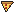
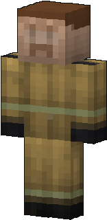
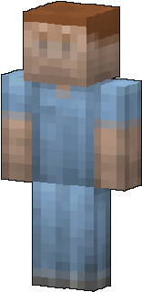
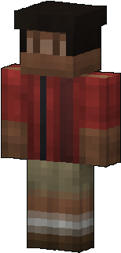
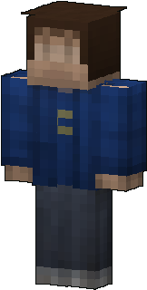
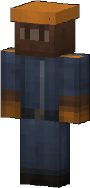

Allies
Allies are survivors who follow you, fight the zombies and pick things up for you. Hire one from a Camp Guard, or recruit a free survivor you meet.
How allies work
Right click a survivor and choose Recruit: they follow you and fight. The Camp Guard trader also sells one (Hire Help).
Right click your ally: health, status, their bag, the items you can heal them with, and Part ways.
Every zombie your ally kills has a 40% chance to leave them something (never scrap). The bag holds 3 things; buy them from the menu for scrap.
An ally at 0 health is down. Sneak within 3 blocks of them for 3 seconds to revive them. Nobody comes within 45 seconds? They retreat and leave.
Ends the alliance: they stay where they are as a free survivor (same name, look and bag). You can recruit them again later.
Hold a Whistle: the action bar becomes a compass pointing to your nearest ally. A Walkie-Talkie calls your allies to you.
Healing an ally
Open their menu while you carry one of these: a button heals them with it.
 First Aid Kit+40 health
First Aid Kit+40 health Medicine+8 health + 10 s regeneration
Medicine+8 health + 10 s regeneration Bandage+4 health
Bandage+4 health
Pizza Slice+8 health Sandwich+6 health
Sandwich+6 healthWhat they find
Their looks





